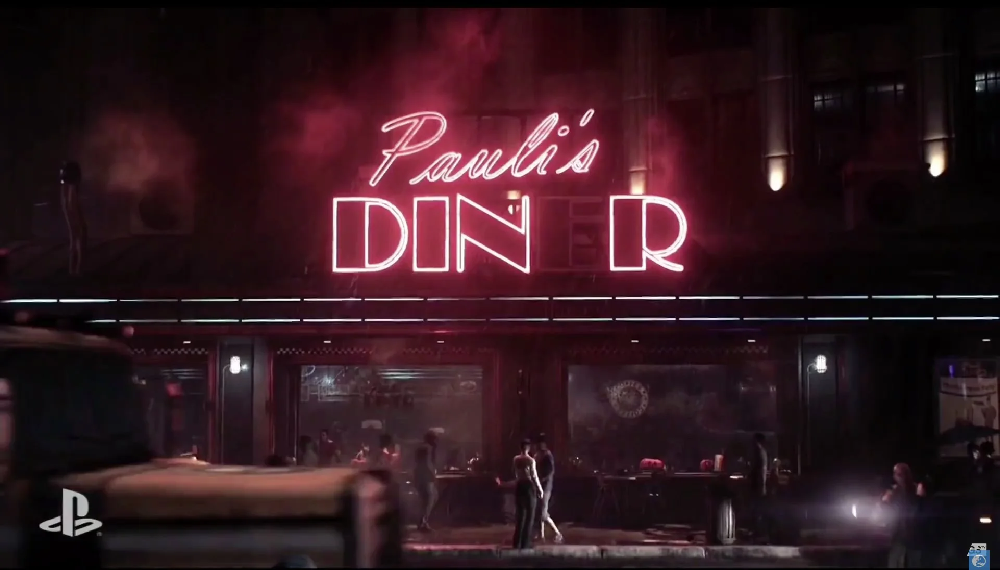
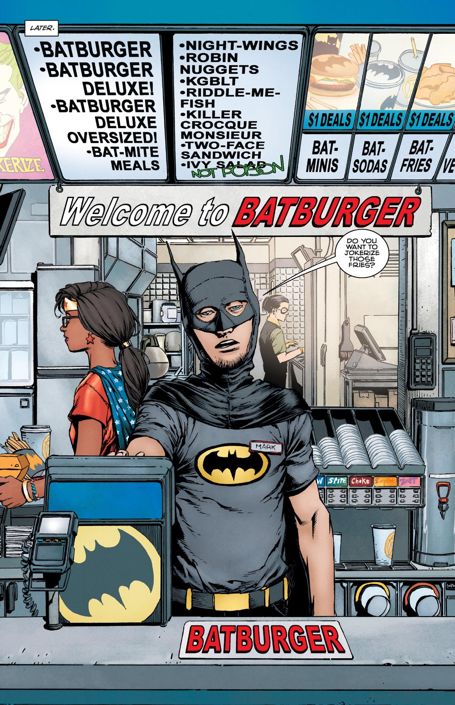

The Iceberg Lounge is Gotham's signature night club run by the Penguin.
It's a two-story 12,800 square foot restaurant that includes a large pool
for pet seals and penguins you can watch while you dine. The entire restaurant
has a polar themed aesthetic and includes an iceberg sculpture in the center of
the establishment. Oftentimes, guests can see a tuxedo band playing smooth jazz.
The iceberg lounge is smooth, elegant, and the perfect place to spend your evenings.

Pauli's Diner
Pauli's diner is a restaurant founded by Paul Dini that can be found near Ace Chemicals.
It's a frequent dining location for Gotham's heroic GCPD. Pauli’s diner has a cozy environment
with great service and even better food. Some of the menu items include Pauli's pancakes,
Miagani muffins, and keystone waffles. If you find yourself in the area you should grab
yourself some breakfast at Pauli’s Diner.

Bat Burger
The Bat Burger is a fast food restaurant chain that can be found in the Gotham City Metro Area.
The entire menu is based on Batman and his associates. Some of the menu items include the famous
bat burger, night-wings riddle-me-fish, robin nuggets, and more. All employees wear Batman themed
costumes to increase immersion. The Bat Burger also includes options for vegans.